Navigating the IDE¶
Through the document there are references to various actions, it’s good to know how to efficiently navigate through them.
Often there multiple ways to achieve the same results and this section will highlight few, so then can find whichever way is most comfortable to him.
Starting the IDE¶
Before using the IDE, it needs to be started, installer generates shortcuts in the start menus and on the desktop:
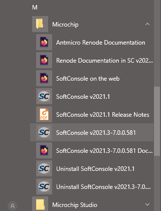
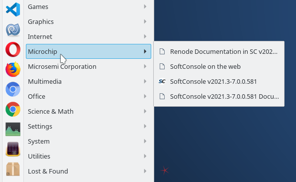
Note
This screenshot is from KDE 5 desktop environment just as an example, some desktop environments might have different looking start menu or not have a start menu concept at all. Same for the desktop icon, the installer will try to place a desktop icon for the user, but the desktop environment might not support icons on the desktop altogether.
As an alternative to the desktop/menu shortcuts, the launcher scripts can be used directly:
<SC_INSTALL_DIR>/softconsole.cmd<SC_INSTALL_DIR>/softconsole-shared.cmd
<SC_INSTALL_DIR>/softconsole.sh<SC_INSTALL_DIR>/softconsole-shared.sh
The first softconsole.(cmd|sh) script is the preferred one while softconsole-shared.(cmd|sh) is meant to be used when SoftConsole is installed in a shared environment where one installation of SoftConsole is used by many users, such as mapped network drive.
Warning
Do not ever run eclipse binary directly, because the environment settings will not be configured and a lot of submodules will not behave as expected. Always use launcher script or desktop/menu shortcuts.
First start-up¶
When opening workspaces for the very first time then the indexes have to be built and discovery has to finish. It can be seen on the bottom right corner of the IDE:
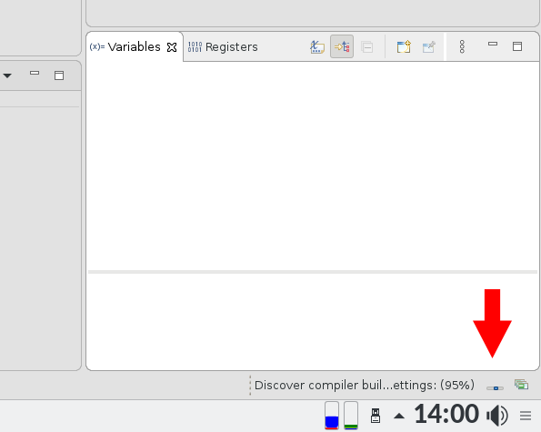
Until the indexing is finished, actions like building projects/workspace will be stalled, therefore it’s best to just wait a minute for the indexing/discovery to finish first and only then start to use the IDE.
Note
This might take different amount of time depending on the size of the workspace and the performance of the host machine, but it shouldn’t take long.
Access commands and other items¶
“Access commands and other items” was formerly “Find Action”, it’s SoftConsole’s feature to find quickly GUI and various other entities.
Other IDEs have similar feature and they name it slightly differently:
Visual Studio Code calls it ‘Command Pallet’
CLion ‘Find action’
Sublime Text ‘Command Prompt’
There are multiple ways to trigger this feature:
Ctrl + Shift + Pkeyboard shortcut (same as Visual Studio Code)Ctrl + 3keyboard shortcut (similar to other Eclipse based IDEs)By clicking the icon in the toolbar (top right corner): 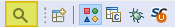
The search terms can be just partials and just initials, “Run To Line” can be searched just by typing rtl
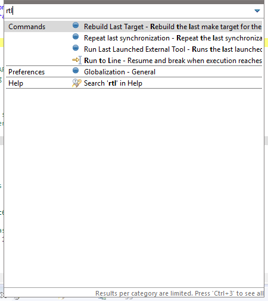
If the “Run To Line” action will be selected, then the next time its recommendation will have priority as recently used command.
It can search inside the dialogs as well, not just to trigger “Preferences” dialog, but to find content inside it. For example searching “keys” will find a subsection in the Preferences dialog where user can customize the keyboard shortcuts.
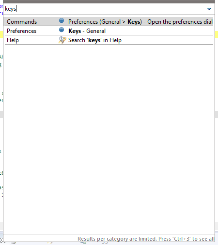
The search can be used to ‘select’ the editor tab from the current opened tabs, if the user has many files opened at the same time, it can be useful. And if the file is not opened in the editor, it will find the files in the project (even partial matches). Searching “http” in the mpfs-freertos-lwip project:
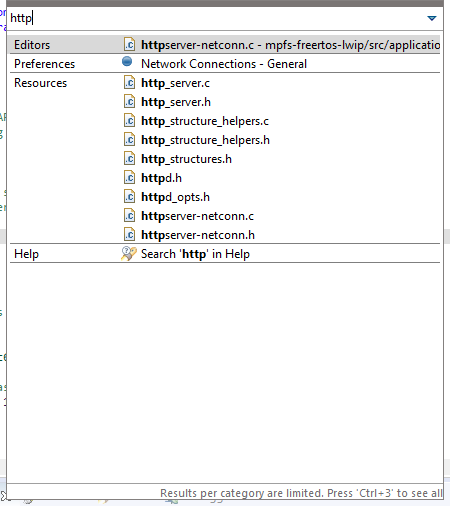
It can be activated to search even the content of the files, however this will slow down the indexing and has to be explicitly enabled with Activate bundle for 'File Content' proposals
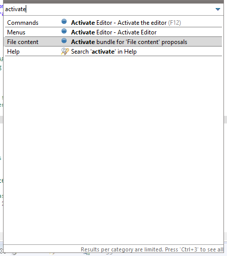
Another useful feature is Toggle Show Key Bindings, triggering the action will first enable it and then activating it later again will disables it (Toggle). When having remote meetings frequently, it’s nice to show popups what keyboard shortcuts the user pressed and their purpose/action is and should make it easier for person on the other side to follow.
Searching tskb will find the action:

After the is Toggle Show Key Bindings activated, a transparent popup is shown on the bottom of the screen when some shortcut is invoked:
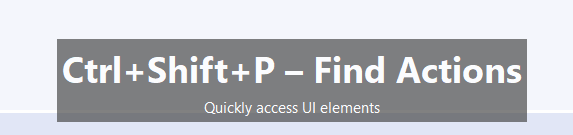
Toolbar icons¶
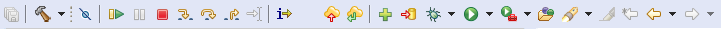
Toolbar icons can be seen as visual shortcuts for specific actions under the menu bar, these actions can be triggered by using the submenus, ‘Find Action’ and keyboard shortcuts as well. Some icons get disabled depending on their state and their relevance, if using non-git project then the Git icons are grayed out, if no changes were made to any files, the “Save All” will be disabled.
Note
Above icons are showcasing our combined Develop and debug perspective which we recomend to users. However if the user needs to use different perspective the icons will differ.
Save all¶
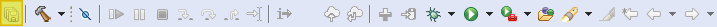
Will save all changes in all editors/tabs. Can be triggered with Ctrl + Shift + S keyboard shortcut or with the menu:
Build the current project¶
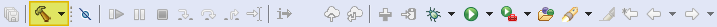
The ‘hammer’ icon will build the currently selected project with its active configuration. The dropdown arrow can be used to quickly switch between configurations and triggering a build in one action. The build can be triggered with Alt + B keyboard shortcut or with the menu:
Note
Similar shortcut Ctrl + B will compile all opened projects in the workspace.
If it’s necessary to switch the build configuration without triggering a build, then this can be achieved with:
![digraph {
graph [rankdir="LR", ranksep=.01, bgcolor=transparent];
node [fontname="Verdana", fontsize="9", shape="rectangle", width=.1, height=.2, margin=".04,.01", style=filled, fillcolor=white];
edge [arrowsize=.7];
"Right click on \<YOUR_PROJECT\> in the Project Explorer" -> "Build Configurations" -> "Set Active" -> "select the required configuration"
}](../_images/graphviz-703fb496213e1204330dc354130857ca52033064.png)
Skip all breakpoints¶
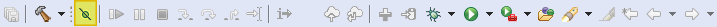
It’s very useful when troubleshooting code and requiring to something similar to a Run launcher without having to make the Run launcher. This will disable all breakpoints without removing them (so they can be used later). It can be triggered with Ctrl + Alt + B keyboard shortcut or with the menu:
Even when it’s not explicitly named as a ‘Toggle’ this feature is a toggle.
Warning
Forgetting about this feature and leaving it activated, might make the user wonder why are his breakpoints not working
Debugging actions/icons¶
Collection of Debugging actions/icons are invoked in context of the active hart/core. In single-core targets this doesn’t matter, but for multi-core (multi-hart) targets it’s important to have the desired core/hart selected in the Debugger tab when invoking the actions:

Note
These cores/harts are in the GUI represented as Threads.
Resume¶
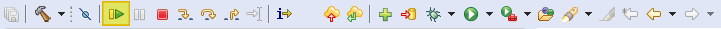
When debugging the target which is halted, then Resume will continue the execution (until the next breakpoint). It can be triggered with F8 keyboard shortcut or with the menu:
![digraph {
graph [rankdir="LR", ranksep=.01, bgcolor=transparent];
node [fontname="Verdana", fontsize="9", shape="rectangle", width=.1, height=.2, margin=".04,.01", style=filled, fillcolor=white];
edge [arrowsize=.7];
"SoftConsole Menu toolbar" -> "Run" -> "Resume"
}](../_images/graphviz-595f4898ec89755b76bb78dde8de6be878269c19.png)
Note
When a debug launcher is invoked and the target is initialising the ‘Resume’ icon might show as colored (active/enabled), however the UX is more reliable when waiting slightly for the target to break a main and not invoke the ‘Resume’ while the target is initialising for the debug session.
Important
Except few edge cases the Resume will resume whole target with all harts, regardless what hart is selected.
Suspend¶
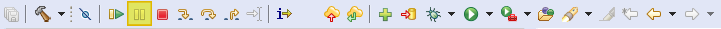
When there are no breakpoints and the target is running, the debugger can halt the target. Because of the ad-hoc nature of the Suspend, the target might be in various location and very deeply nested inside the firmware, often Step out (shown below) can be used to get outside deeply nested functions.
It has no keyboard shortcut but can be invoked with the menu:
Terminate¶
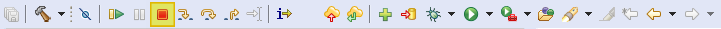
It will terminate currently selected session, in case of Renode sessions, it’s important to select the group launcher so the whole Renode is terminated, and not just the GDB connection. It can be triggered with Ctrl + F2 keyboard shortcut and with the menu:
Note
There are other “Red Stop” buttons in the GUI and some might act in a similar manner (terminating GDB console will terminate the GDB which terminate the debug sessions). However, user should use the toolbar terminate button to properly terminate the sessions, because in some cases there are differences (such as Renode group launchers).
Step Into¶
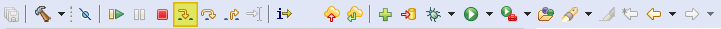
Will step inside a function and go deeper in the call-stack. It can be triggered with F5 keyboard shortcut and with the menu:
Note
The functionality can change depending on the “Instruction Stepping Mode” which will be explained below.
In the “Instruction Stepping Mode” it will go deeper into the callstack and follow the call instructions such as jal.
Step Over¶

Will step over the function and continue debugging after the function finishes. It can be triggered with F6 keyboard shortcut and with the menu:
Note
The functionality can change depending on the “Instruction Stepping Mode” which will be explained below.
In the “Instruction Stepping Mode” when call instruction such as jal is encountered, the CPU will execute all the instructions inside the call and the stepping mode will continue after the call returned back.
Step Return¶
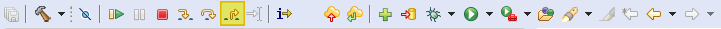
Will return back out from the function. It can be triggered with F7 keyboard shortcut and with the menu:
Note
The functionality can change depending on the “Instruction Stepping Mode” which will be explained below.
In the “Instruction Stepping Mode” the CPU will execute all the instructions inside until return from a call instruction is reached, such as ret, then it will return from the call and continue the stepping mode.
Run to Line¶
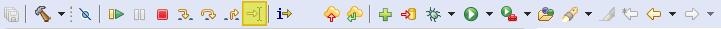
It can be seen as making a temporary one-off breakpoint and the invoking “Resume”. Some users out of habit might still create breakpoints and resume to them, just to delete them later, however this is a faster way to achieve the same. It has no direct keyboard shortcut, but can triggered with Ctrl + Shift + P and then typing rtl or with the menu:
Instruction stepping¶
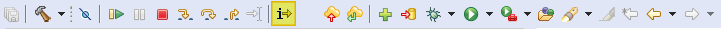
It will switch to instruction stepping mode, and the step action will go over a single instruction instead of going over the whole C functions. It has no direct keyboard shortcut, but can be used with the menu:
Git¶
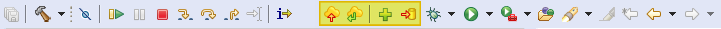
Git functionality is provided in the SoftConsole by EGit plugin, which is Eclipse GUI integration of a JGit plugin. JGit is a full and stand-alone implementation of the Git protocol, which allows SoftConsole users to use Git repositories without a need to install any git command line client binary or any other dependencies on their host.
See https://wiki.eclipse.org/EGit/User_Guide to know more about the EGit plugin.
The icons are:
Git Push
Git Pull
Git Add
Git Commit
All of these and many more can be accessed via:
Debug and Run launchers¶
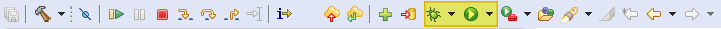
Debug launchers are used to initiate a debug session with a target. Clicking on the icon will activate the last launcher, however with Renode (which need group launchers) it might trying to run wrong launcher. Better alternative is to use F11 which will try terminate the existing sessions and re-launch it (which should save time as it’s not needed to terminate the session by hand). Sometimes the issue might be that the target doesn’t terminate fast enough and re-launch might fail, pressing the F11 yet again should resolve this issue. With combination of Incremental Builds, auto build the user can develop much more rapidly, doing small changes, and F11 then will terminate the session, build the project and re-launch the last launcher quickly.
Click the drop-down arrow shows Debug launcher configuration of all opened projects. If there the amount of launcher is confusing then closing all other unrelated projects will help.
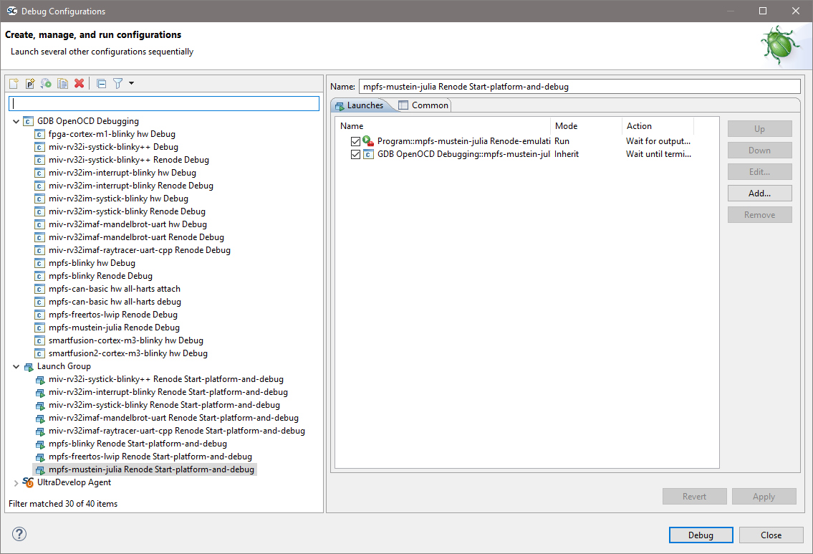
And it should decrease the amount of noise/distractions in the Debug Launcher Configuration dialog:
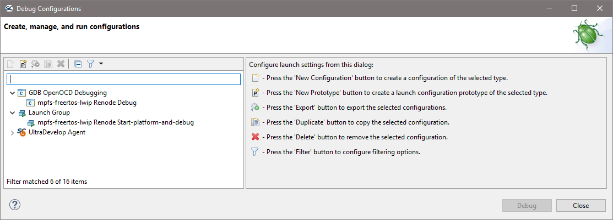
Other way to close projects selectively, one by one, can be done with:
Or even faster with:
To open the closed projects, just double-click on their name in the Project Explorer.
Run Launchers¶
Similar to Debug launchers are the Run launchers, usually our examples are not shipping with Run launchers. They could be used to run applications locally (not useful in embedded IDE), however they can be used on remote/embedded targets like the Debug launchers do, in fact the logic behind Run and Debug launchers is the same, only difference between the Debug and Run launchers is that they have separate ‘favorites’ and ‘history’ so they can trigger their own ‘run most recent launcher’ and the Run launchers have implied Skip all breakpoints. Users can feel free to make their own Run launchers by duplicating the Debug launcher, renaming it to Run Launcher and then:
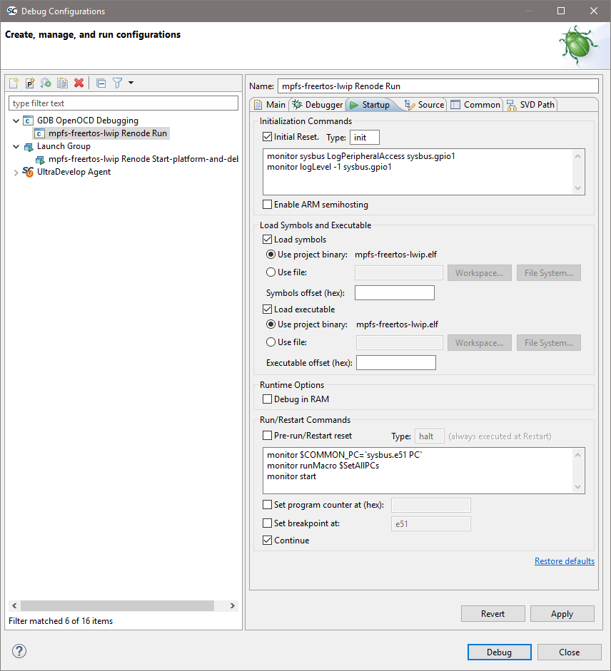
It will make the launcher to NOT break at main function and together with the Run launchers implied Skip all breakpoints will allow user to just run the applications on the target without debugger halting it.
External launchers¶
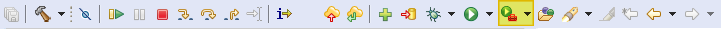
Are used to store launchers to external tools, usually Renode platforms reside here and all our MPFS boot mode programmers.
Open Element¶
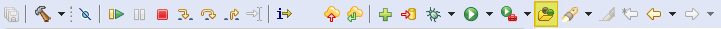
Can be considered as search which understands code, searching main can give this result:
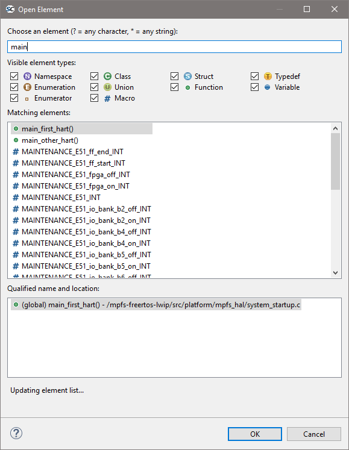
Search¶

Search opens a the generic search dialog, the drop-down arrow can be used to go directly to a specific tab.
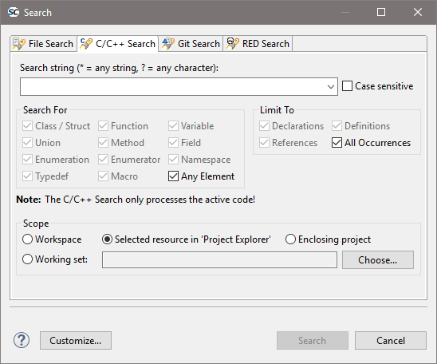
Common uses are to do File Search where it can look into comments, text files, READMEs as well.
Interesting setting is scopes which enable specific behaviors:
Will search inside the whole workspace, that means all opened projects.
Will search only within a single project, where ever the currently selected file in the Project Explorer belongs to.
Will search within the selected file, or the selected folder (and its sub-folders/sub-files).
Mark occurrences¶
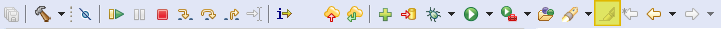
Will highlight in the code whatever element is selected, selecting i in the example below marked all occurrences of i in the code:
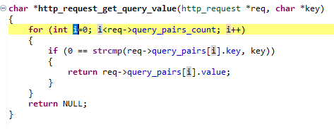
Back and Forward¶
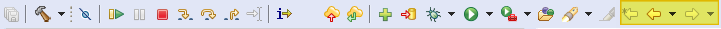
Last edit location
Ctrl + Qwill jump to a editor and location which was edited as lastBack
Alt + Left cursorwill move to previous editor and location even when it was not editedForward
Alt + Right cursorundo action for theBack
Back function is useful when navigating the source code and using F3 or Ctrl + Left click on various symbols to open to their Declaration and the Back function can be used to navigate back to the parent.